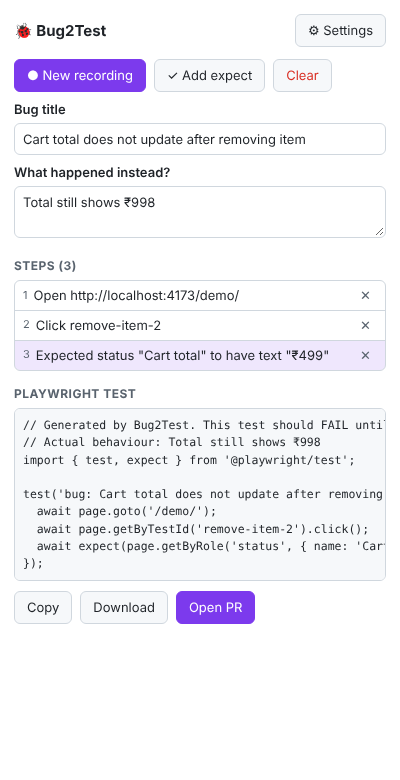
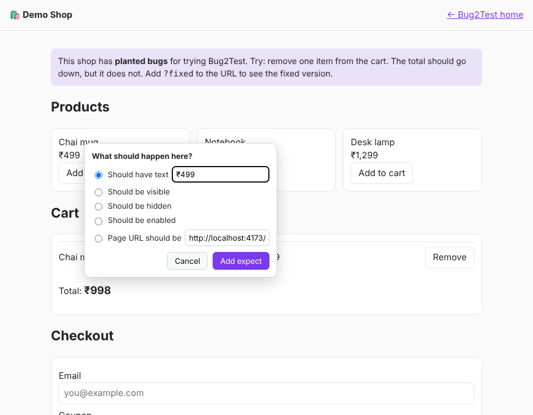

A Chrome extension for testers. Record the bug, click on what is broken, and Bug2Test opens a pull request with a test that fails today and passes once the bug is fixed.

tests/bugs/<bug>.spec.ts in a new PR.// Generated by Bug2Test. This test should FAIL until the bug is fixed.
// Actual behaviour: Total still shows ₹998
import { test, expect } from '@playwright/test';
test('bug: Cart total does not update', async ({ page }) => {
await page.goto('/demo/');
await page.getByTestId('remove-item-2').click();
await expect(
page.getByRole('status', { name: 'Cart total', exact: true })
).toHaveText('₹499');
});
The PR description also lists the steps, expected vs actual, console errors and failed network calls captured while recording.

The test is the reproduction. Devs run one command and see the bug.
Every bug ends with a regression test in the repo, so it cannot come back silently.
QA adds real Playwright tests without writing code or learning selectors.
getByTestId and getByRole first. CSS only as a last resort, marked with a TODO.
Passwords and OTP fields are never recorded. They become env vars. The token stays in your browser.
Asks for the one site you record. Talks only to api.github.com.
| Bug2Test | Jam.dev | Playwright codegen | DevTools Recorder | |
|---|---|---|---|---|
| Made for testers | Yes | Yes | No (dev tool) | Partly |
| "Expected result" as an assertion | Yes | No | Yes | Basic |
| Opens a PR with the test | Yes | No | No | No |
| Console + network context | Yes | Yes | No | No |
bug2test.zip from the latest release and unzip it, or build it: npm ci && npm run build.chrome://extensions and turn on Developer mode.dist/).baseURL (e.g. http://localhost:3000).Then open the demo shop, remove an item from the cart and record your first bug.